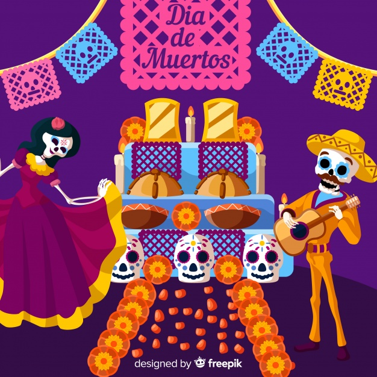
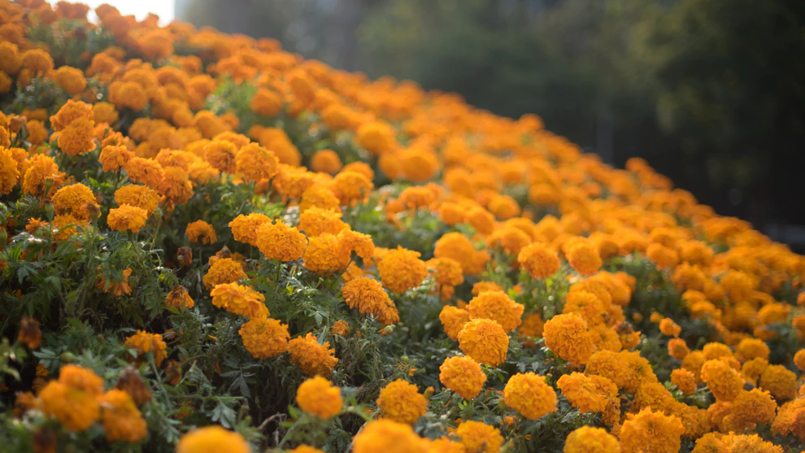
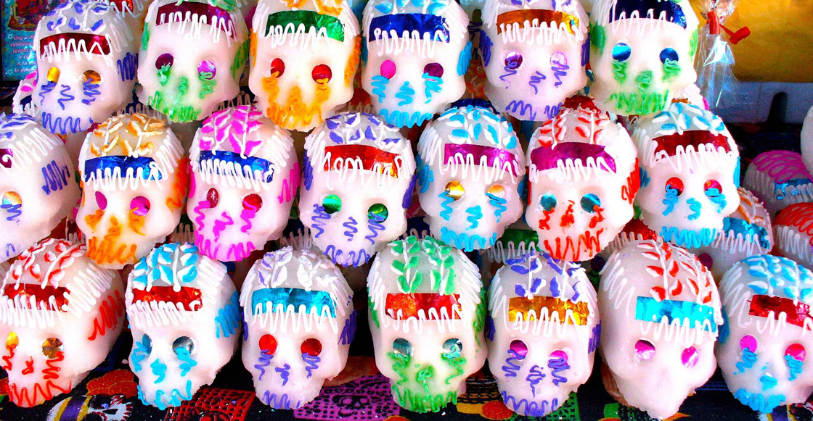
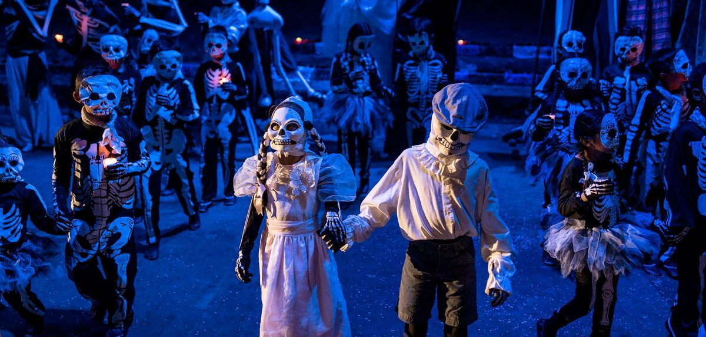

¿Qué se hace en el día de muertos?

Poner la ofrenda
Ofrendar, en el Día de Muertos, es compartir con los difuntos el pan, la sal, las frutas, los manjares culinarios, el agua y, si son adultos, el vino. Ofrendar es estar cerca de nuestros muertos para dialogar con su recuerdo, con su vida. La ofrenda es el reencuentro con un ritual que convoca a la memoria.

Adornar con flores de cempasúchil
Las flores. Son símbolo de la festividad por sus colores y estelas aromáticas. Adornan y aromatizan el lugar durante la estancia del ánima, la cual al marcharse se irá contenta, el alhelí y la nube no pueden faltar pues su color significa pureza y ternura, y acompañan a las ánimas de los niños.

¡Compra calaveritas de dulce!
Una de las grandes tradiciones gastronómicas para celebrar el Día de Muertos en México, son las famosas calaveritas de dulce. Hechas con técnicas artesanales, éstas son colocadas en altares y ofrendas como parte de la decoración. Estas calaveritas de azúcar, amaranto o chocolate con nombres son utilizadas para recordar a nuestros seres queridos difuntos, o para regalar a personas en vida, como un recordatorio de que lo único que tenemos seguro en esta vida, es la muerte.
